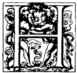
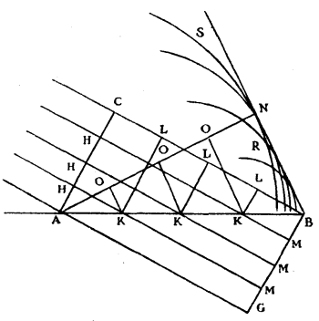
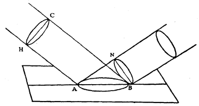

Chapter 5: Chapter II¶
5.1 On Reflexion¶

aving explained the effects of waves of light which spread in a homogeneous matter, we will examine next that which happens to them on encountering other bodies. We will first make evident how the Reflexion of light is explained by these same waves, and why it preserves equality of angles.
Let there be a surface AB; plane and polished, of some metal, glass, or other body, which at first I will consider as perfectly uniform (reserving to myself to deal at the end of this demonstration with the inequalities from which it cannot be exempt), and let a line AC, inclined to AD, represent a portion of a wave of light, the centre of which is so distant that this portion AC may be considered as a straight line; for I consider all this as in one plane, imagining to myself that the plane in which this figure is, cuts the sphere of the wave through its centre and intersects the plane AB at right angles. This explanation will suffice once for all.

The piece C of the wave AC, will in a certain space of time advance as far as the plane AB at B, following the straight line CB, which may be supposed to come from the luminous centre, and which in consequence is perpendicular to AC. Now in this same space of time the portion A of the same wave, which has been hindered from communicating its movement beyond the plane AB, or at least partly so, ought to have continued its movement in the matter which is above this plane, and this along a distance equal to CB, making its own partial spherical wave, according to what has been said above. Which wave is here represented by the circumference SNR, the centre of which is A, and its semi-diameter AN equal to CB.
If one considers further the other pieces H of the wave AC, it appears that they will not only have reached the surface AB by straight lines HK parallel to CB, but that in addition they will have generated in the transparent air, from the centres K, K, K, particular spherical waves, represented here by circumferences the semi-diameters of which are equal to KM, that is to say to the continuations of HK as far as the line BG parallel to AC. But all these circumferences have as a common tangent the straight line BN, namely the same which is drawn from B as a tangent to the first of the circles, of which A is the centre, and AN the semi-diameter equal to BC, as is easy to see.
It is then the line BN (comprised between B and the point N where the perpendicular from the point A falls) which is as it were formed by all these circumferences, and which terminates the movement which is made by the reflexion of the wave AC; and it is also the place where the movement occurs in much greater quantity than anywhere else. Wherefore, according to that which has been explained, BN is the propagation of the wave AC at the moment when the piece C of it has arrived at B. For there is no other line which like BN is a common tangent to all the aforesaid circles, except BG below the plane AB; which line BG would be the propagation of the wave if the movement could have spread in a medium homogeneous with that which is above the plane. And if one wishes to see how the wave AC has come successively to BN, one has only to draw in the same figure the straight lines KO parallel to BN, and the straight lines KL parallel to AC. Thus one will see that the straight wave AC has become broken up into all the OKL parts successively, and that it has become straight again at NB.
Now it is apparent here that the angle of reflexion is made equal to the angle of incidence. For the triangles ACB, BNA being rectangular and having the side AB common, and the side CB equal to NA, it follows that the angles opposite to these sides will be equal, and therefore also the angles CBA, NAB. But as CB, perpendicular to CA, marks the direction of the incident ray, so AN, perpendicular to the wave BN, marks the direction of the reflected ray; hence these rays are equally inclined to the plane AB.
But in considering the preceding demonstration, one might aver that it is indeed true that BN is the common tangent of the circular waves in the plane of this figure, but that these waves, being in truth spherical, have still an infinitude of similar tangents, namely all the straight lines which are drawn from the point B in the surface generated by the straight line BN about the axis BA. It remains, therefore, to demonstrate that there is no difficulty herein: and by the same argument one will see why the incident ray and the reflected ray are always in one and the same plane perpendicular to the reflecting plane. I say then that the wave AC, being regarded only as a line, produces no light. For a visible ray of light, however narrow it may be, has always some width, and consequently it is necessary, in representing the wave whose progression constitutes the ray, to put instead of a line AC some plane figure such as the circle HC in the following figure, by supposing, as we have done, the luminous point to be infinitely distant. Now it is easy to see, following the preceding demonstration, that each small piece of this wave HC having arrived at the plane AB, and there generating each one its particular wave, these will all have, when C arrives at B, a common plane which will touch them, namely a circle BN similar to CH; and this will be intersected at its middle and at right angles by the same plane which likewise intersects the circle CH and the ellipse AB.

One sees also that the said spheres of the partial waves cannot have any common tangent plane other than the circle BN; so that it will be this plane where there will be more reflected movement than anywhere else, and which will therefore carry on the light in continuance from the wave CH.
I have also stated in the preceding demonstration that the movement of the piece A of the incident wave is not able to communicate itself beyond the plane AB, or at least not wholly. Whence it is to be remarked that though the movement of the ethereal matter might communicate itself partly to that of the reflecting body, this could in nothing alter the velocity of progression of the waves, on which the angle of reflexion depends. For a slight percussion ought to generate waves as rapid as strong percussion in the same matter. This comes about from the property of bodies which act as springs, of which we have spoken above; namely that whether compressed little or much they recoil in equal times. Equally so in every reflexion of the light, against whatever body it may be, the angles of reflexion and incidence ought to be equal notwithstanding that the body might be of such a nature that it takes away a portion of the movement made by the incident light. And experiment shows that in fact there is no polished body the reflexion of which does not follow this rule.
But the thing to be above all remarked in our demonstration is that it does not require that the reflecting surface should be considered as a uniform plane, as has been supposed by all those who have tried to explain the effects of reflexion; but only an evenness such as may be attained by the particles of the matter of the reflecting body being set near to one another; which particles are larger than those of the ethereal matter, as will appear by what we shall say in treating of the transparency and opacity of bodies. For the surface consisting thus of particles put together, and the ethereal particles being above, and smaller, it is evident that one could not demonstrate the equality of the angles of incidence and reflexion by similitude to that which happens to a ball thrown against a wall, of which writers have always made use. In our way, on the other hand, the thing is explained without difficulty. For the smallness of the particles of quicksilver, for example, being such that one must conceive millions of them, in the smallest visible surface proposed, arranged like a heap of grains of sand which has been flattened as much as it is capable of being, this surface then becomes for our purpose as even as a polished glass is: and, although it always remains rough with respect to the particles of the Ether it is evident that the centres of all the particular spheres of reflexion, of which we have spoken, are almost in one uniform plane, and that thus the common tangent can fit to them as perfectly as is requisite for the production of light. And this alone is requisite, in our method of demonstration, to cause equality of the said angles without the remainder of the movement reflected from all parts being able to produce any contrary effect.